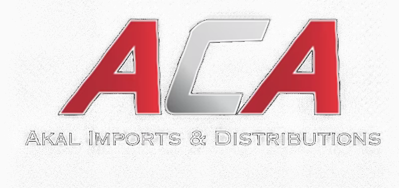

ACA AUTOA wholesale-first automotive parts platform with a direct-to-consumer wing, built on Cin7 Core, Shopify, and a custom intelligence layer that stitches the pieces together.
ACA Auto is an established automotive parts importer carrying roughly R24M of stock across 600 SKUs, currently running 95% wholesale through email, WhatsApp, phone, and fax. Their incumbent system is a legacy database (vintage uncertain, but some clunky old pre-DOS contraption) that remains queryable via standard SQL. They want to modernise without ripping out everything overnight, add a direct-to-consumer wing alongside their existing wholesale operation, and most importantly grow new B2B trade clients beyond their existing customer base.
This document sets out a pragmatic three-layer architecture: a customer-facing layer (Shopify for D2C, Cin7's B2B portal for wholesale, an AI-assisted chat experience across both), a custom intelligence layer (the bits that make this platform smarter than the competition), and a core systems layer (Cin7 Core for inventory and order management, Xero for accounting, and a read-only bridge to the legacy database during transition).
Everything bespoke is owned by ACA Auto. Everything SaaS is chosen for replaceability. The legacy database is treated as a guest, not a tenant.
The architecture targets automation across as much of the operation as practical. Some workflows are entirely automatable: order capture and processing, price resolution, stock synchronisation, invoicing, dispatch documentation, supplier data ingestion, content generation, and routine customer enquiries. Some workflows require human judgement and stay manual by design: pricing strategy, supplier negotiations, exception handling, complex customer escalations, and product range and brand decisions. The split between the two is the substance of this architecture.
ACA Auto's current operation runs orders through email, WhatsApp, phone, and fax, all of which require manual re-entry into the legacy system. Pricing queries are answered from sales staff knowledge of customer agreements. Replenishment decisions follow informal patterns rather than forecasted demand. Supplier catalogues are added manually as new ranges arrive. The architecture replaces these manual touchpoints with automated capture and processing wherever the workflow is rule-based or pattern-based.
Streamline and scale. Operations that scale linearly with order volume are automated. As ACA Auto grows, order processing, price lookups, dispatch documentation, and supplier data work do not require headcount growth in proportion. The same team can handle several times the current throughput.
Reduce manual drain. Tedious daily tasks shift from humans to systems. Order entry, pricing lookups, reorder timing decisions, supplier catalogue ingestion, and routine customer queries are handled by software. Staff time moves to relationship management, strategic decisions, and exception handling.
Reliability and precision. Where rules are well-defined, software executes them more consistently than humans. Stock counts don't drift through data entry errors, prices don't get mistyped, customer pricing tiers stay accurate, and replenishment follows consistent logic.
Buy commodity, build advantage. External services handle commodity infrastructure: Cin7 Core for inventory, Xero for accounting, Shopify for D2C, payment gateways, courier aggregation. Custom development handles only the parts that differentiate ACA Auto from competitors: tiered pricing, the AI assistant and knowledge base, semantic upsell, and supplier data ingestion. The build budget is concentrated where it earns the most.
The result is an inversion of how the business runs today. Currently, people do the routine work and the system records what they did. After the build, the system does the routine work and people do the judgement work: approving AI-drafted supplier imports rather than typing them in, reviewing forecasted purchase orders rather than calculating them, responding to escalated chat conversations rather than answering routine fitment questions.
For wholesale buyers, ordering happens via the B2B portal or WhatsApp, with tier-aware pricing visible directly. Out-of-hours queries are handled by the AI assistant. For the sales team, routine queries are deflected automatically, leaving more time for new account development and relationship management. For the owner and 2IC, the analytics dashboard provides a single view of operations and marketing performance, drawing from Cin7, Shopify, Xero, and the marketing stack rather than requiring assembly from each system separately.
Four layers, top to bottom: where customers touch it, where the intelligence lives, where the records of truth sit, and the external services that make it all useful. The marketing stack sits within the external layer, distinguished but not detached.
What sits where, what ACA Auto owns, what's rented, and what's politely tolerated until we can show it the door.
| Component | Layer / Type | Role |
|---|---|---|
| Shopify Storefront SaaS | L1 · D2C | Public-facing consumer storefront. Product catalogue, search, cart, checkout. South African payment gateways via app. Theme custom-built for brand consistency. |
| Cin7 B2B Portal SaaS | L1 · Wholesale | Authenticated wholesale ordering for trade customers. Per-customer price lists. Order history. Native to Cin7 Core, so inventory and pricing are always live. |
| Chat Widget & WhatsApp Bespoke | L1 · Conversational | Web chat widget embedded in Shopify and B2B portal. Same backend powers WhatsApp via Clickatell. Unified conversation state across both channels: a chat started on the storefront can continue on WhatsApp later without losing context. |
| Market Capture Forms Bespoke | L1 · Embedded | Feedback forms, competition entries, missing-product requests. Embedded into Shopify and B2B portal. Data flows into the analytics layer for product range and content decisions. |
| Tiered Pricing Engine Bespoke | L2 · Service | Resolves price for any (SKU, customer, quantity) combination. Pre-populates the price table from MOQ, shipping cost, typical sales prices, and historical order quantities. Single source of pricing truth across all channels. |
| Semantic Upsell Engine Bespoke | L2 · Service | Cross-sell and complementary-part recommendations. Beyond keyword matching: uses Claude API to understand functional relationships between parts. Surfaces in product pages and post-add-to-cart. |
| Replenishment Forecast Bespoke | L2 · Service | Predictive reorder timing aware of supplier lead times from China (typically 6-12 weeks). Flags fast movers approaching stock-out and slow movers eligible for clearance pricing. |
| Supplier Ingestion Pipeline Bespoke | L2 · Service | Ingests product data, images, and specifications from Chinese suppliers. Mix of API where available, scraping where needed, AI normalisation throughout. Reduces manual SKU onboarding from hours to minutes. |
| AI Assistant & Knowledge Base Bespoke | L2 · Service | RAG-powered chatbot with deep knowledge of all 600 SKUs. Knowledge base lives in pgvector. Tier-aware: authenticated B2B users get their actual pricing in chat, consumers get RRP. Handoff to human via the admin dashboard when needed. |
| Content Automation Pipeline Bespoke | L2 · Service | Structured input (product brief, technical detail, fitment data) generates draft article via Claude. Human reviews in admin dashboard. On approval, Shopify Admin API publishes article with proper schema markup. Powers the 80% AI-generated content stream. |
| Analytics & Dashboard Bespoke | L2 · UI + Service | Operational and marketing dashboard for owner and 2IC. Movement velocity, margin by SKU and customer, forecasting visibility, market data summaries, marketing performance by channel. Replaces Cin7's notoriously rigid native reporting. |
| Newsletter Manager Bespoke | L2 · Service | Thin custom layer over Resend API for marketing newsletters and broadcast campaigns. Segments draw from existing customer data. Replaces the need for Klaviyo or Mailchimp at scale appropriate to a wholesale-led business. |
| Integration Bus Bespoke | L2 · Infrastructure | Webhook router, message queue, retry logic. The plumbing that keeps Cin7, Shopify, Xero, and the bespoke services in sync without losing events. |
| Cin7 Core SaaS | L3 · Core | Inventory management, order management, purchase orders, MRP, B2B portal hosting. The system of record for stock and orders. |
| Xero SaaS | L3 · Core | Accounting, invoicing, VAT, bank reconciliation. Synced bi-directionally with Cin7 Core via native integration. |
| Legacy SQL Database Legacy | L3 · Bridge | Existing system, read-only access via SQL. Used for historical sales data extraction and during transition. Decommissioned at cutover. Treated as a guest, not a citizen. |
| Bob Go 3rd party | L4 · Logistics | Courier aggregation for D2C parcels. Compares The Courier Guy, Aramex, RAM, Fastway etc. Single integration, multi-courier rate shopping. B2B palette freight handled directly with logistics partners outside Bob Go. |
| PayFast / Yoco 3rd party | L4 · Payment | South African payment processing. Yoco for low-fee card processing. PayFast for broader SA payment methods including SnapScan, Instant EFT, Mobicred. |
| Anthropic API 3rd party | L4 · AI | Claude inference for the AI assistant, semantic upsell, supplier data normalisation, content generation, customer feedback summarisation. |
| Postmark + Clickatell 3rd party | L4 · Comms | Postmark for transactional email (order confirmations, dispatch notifications). Clickatell for SMS (OTP, delivery updates) and WhatsApp Business API gateway. SA-based vendor for the messaging side. |
| Analytics Stack 3rd party | L4 · Marketing | GA4, Google Search Console, Bing Webmaster Tools, Google Tag Manager, Microsoft Clarity. All free. Feed our analytics layer for unified reporting in the admin dashboard. |
| Email Marketing Stack 3rd party | L4 · Marketing | Resend handles SMTP and deliverability. Our newsletter manager (L2) provides segmentation, scheduling, and template management. Total cost a small fraction of Klaviyo or Mailchimp at equivalent volume. |
| Ads & Reviews 3rd party | L4 · Marketing | Google Ads, Meta Ads, LinkedIn Ads (added month 4-6). Google Merchant Center for Shopping feed. Judge.me for product reviews including Google Shopping star-rating sync. Google Business Profile and Hello Peter for reputation. |
| Pipedrive CRM 3rd party | L4 · Marketing | B2B sales pipeline for new customer acquisition. Contact management, deal tracking, email sequences, mobile apps. Integrates with email and calendar. LinkedIn Sales Navigator added month 4-6 for outbound prospecting. |
Six end-to-end scenarios that exercise the architecture. If these read sensibly, the rest of the edge cases follow the same patterns.
The legacy system stays in place during the build phase and the early weeks of operation. We don't try to migrate everything in one go because that's how good projects become bad projects. The bridge described in Flow E lets both systems coexist while the team builds confidence.
Phase 1 · Coexistence (weeks 1-10). Legacy remains the system of record. Cin7 Core mirrors stock and customers. Daily reconciliation catches drift. Sales staff continue to enter orders in legacy; nightly bridge keeps Cin7 in sync.
Phase 2 · Cutover (weeks 10-13). Cin7 Core becomes the system of record. Legacy demoted to read-only reference for historical lookups. New orders no longer entered into legacy. Shopify and B2B portal go live.
Phase 3 · Sunset (month 5+). One-time data export from legacy archived as historical record. Legacy database snapshotted, server retired. Reporting against historical data moves to the analytics dashboard, fed by the archive.
Historical sales data (minimum 24 months) for the replenishment forecast model. Customer master records with pricing history. Supplier records and historical lead times. Product master data as a sanity check against Cin7 imports.
The lean budget means we phase the cleverness rather than cramming everything into v1. The goal of v1 is to get ACA Auto off fax and onto a proper system. The goal of v2 is the AI-driven competitive advantage.
Once Phase v2 is delivered and the platform is stable, marketing becomes the engine that converts the operational investment into revenue. Three pillars run in parallel, each with different audience, channel mix, and weighting. This section is the summary; the standalone marketing brief carries the full plan, content production pipeline, AEO methodology, and KPI framework.
The headline pillar. Independent workshops, fitment centres, 4x4 specialists, commercial vehicle workshops, dealerships needing aftermarket supply. The B2B portal is the lead magnet; SEO, trade publications, LinkedIn, and direct outbound feed the pipeline.
Move existing trade customers off fax, phone, and WhatsApp onto the portal. Personalised account-rep outreach, walkthrough videos, incentive schemes, and competitions. Highest-leverage activity in months 1-3, then steady-state retention.
Realistic stab at the consumer market through Shopify. ACA Auto knows Takealot and Amazon outgun them on marketing budget; the play is technical authority, niche-fitment SEO, and AEO. Profitable supplement rather than headline channel.
| Tool | Cost | Purpose |
|---|---|---|
| GA4 + GSC + Bing Webmaster + Clarity | Free | Web analytics, search performance, session recording |
| Resend + custom newsletter layer | ~R350/mo | Transactional and broadcast email |
| Pipedrive CRM | R250-600/user/mo | B2B sales pipeline and outbound sequences |
| LinkedIn Sales Navigator (m4-6+) | ~R1,500/seat/mo | B2B prospecting tooling |
| Ahrefs (m4-6+) | R2,400-4,200/mo | SEO research, keyword tracking, competitor analysis |
| Judge.me | R250/mo | Product reviews with Google Shopping sync |
| Google + Meta + LinkedIn Ads | Variable | Paid acquisition, suggested R15-30k/mo combined |
| Google Business Profile + Hello Peter | Free | Local SEO and SA-specific reputation |
Honest list of things still up in the air. Each one has an assumption made in this document, but the assumption deserves verification before contract.